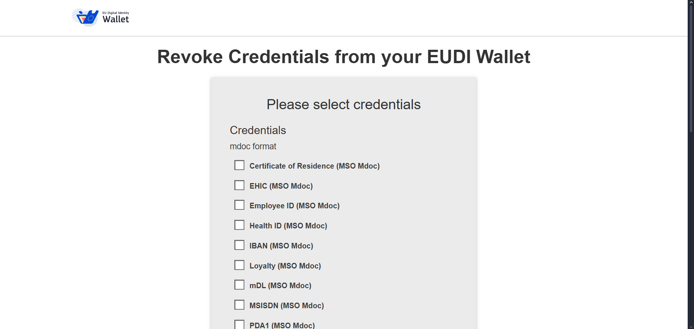
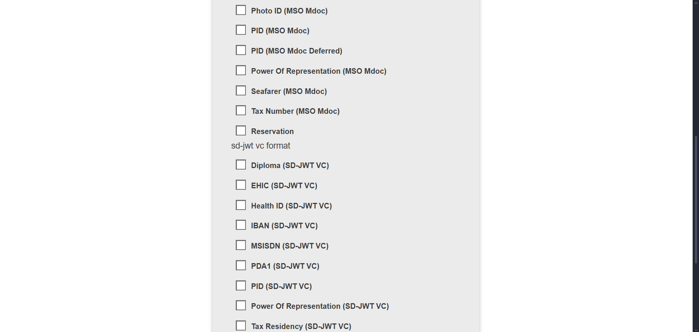
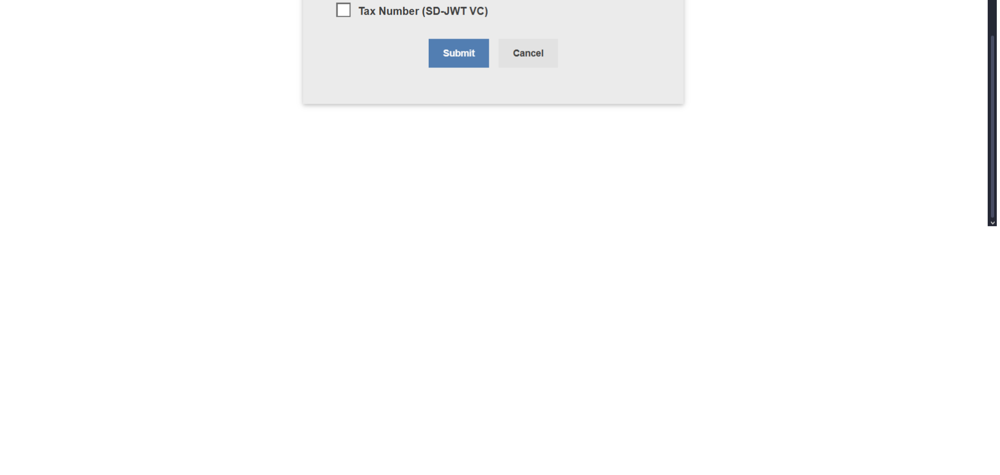
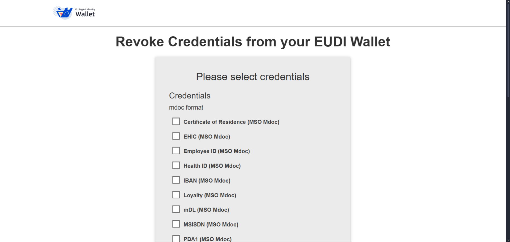
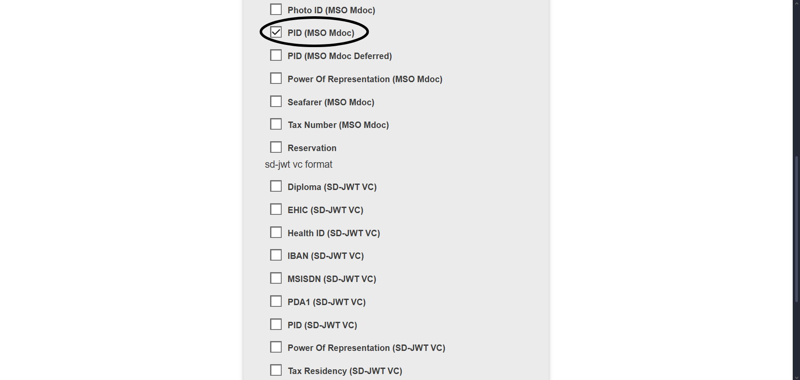
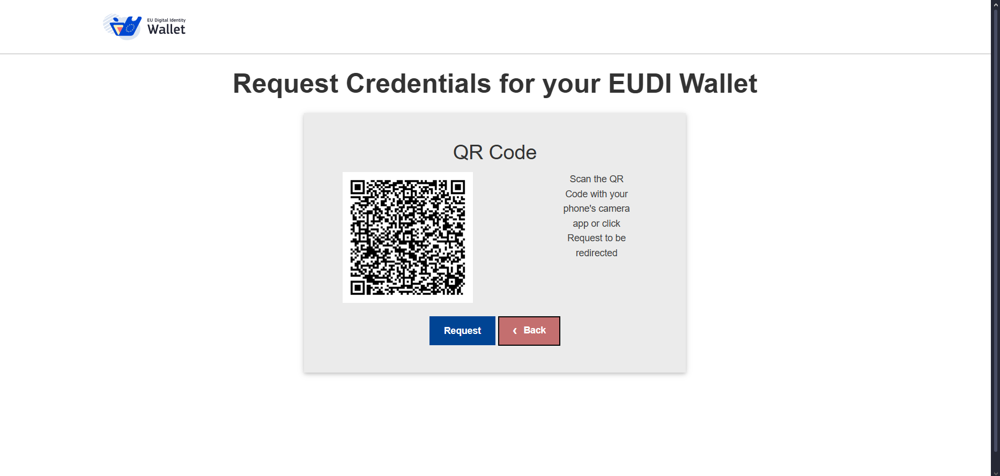
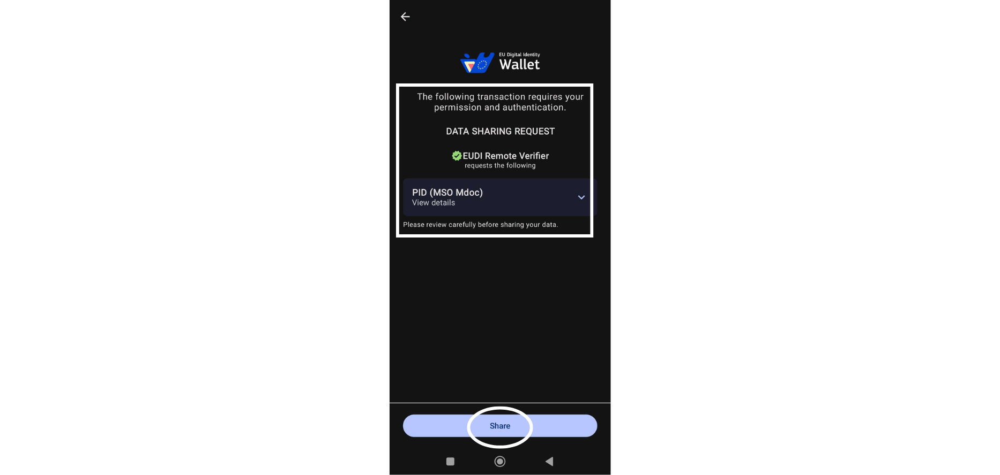
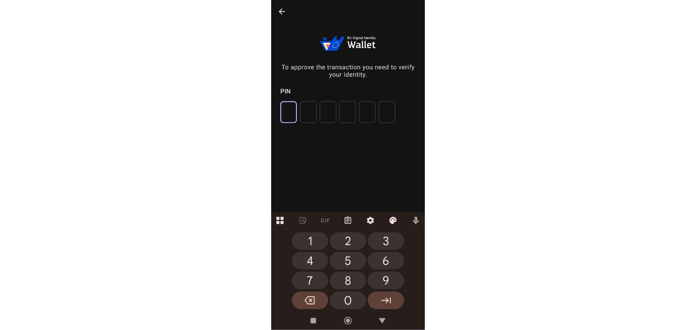
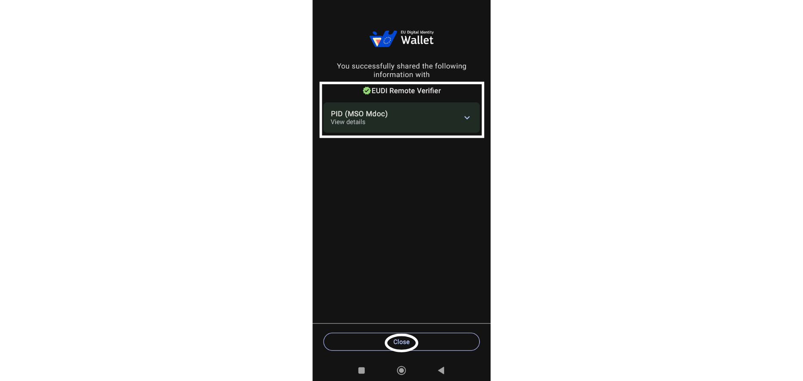
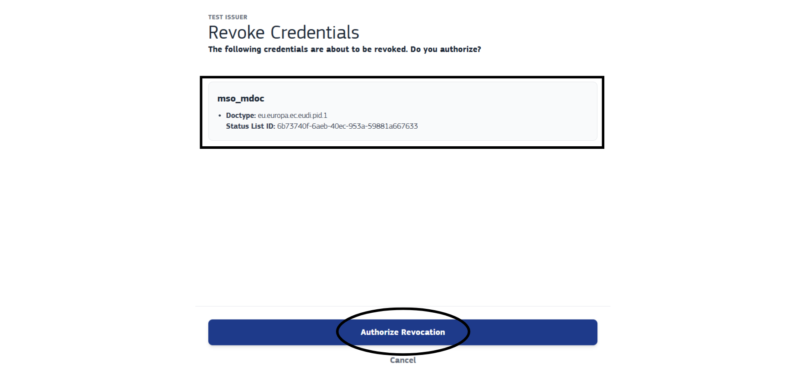

In order to perform this revocation operation, it is necessary to have a device with internet access and the EUDI Wallet app installed, such as a smartphone.
This is the first page where the user can choose which credentials they want to revoke.
On this first page, you can observe the different credentials that can be revoked.
First Page



To get started, simply select the desired credentials.
For this example, a PID in the mdoc format will be selected.
Finally, just click the "Submit" button to proceed.
Step 1: Select the credentials you want to revoke.


A QR code will now be generated.
If you are already using a device with the EUDI Wallet app, there is no need to scan the QR code. Simply press the "Request" button, and you will be redirected directly to the app.
If you are not on a device with the EUDI Wallet app, such as a computer, you will need to scan the QR code with a device that has internet access and the EUDI Wallet app. After scanning, you will be redirected to the app.
Step 2: QR Code Scanning

After being redirected to the EUDI Wallet app, you will see what you need to share your PID, this step acts as user permission and authentication.
To proceed, simply click on the "Share" button..
Step 3: Permission and Authentication

Enter your PIN to continue with the previous step.
Step 5: Enter PIN

If everything goes well in the previous two steps, this transaction will be successful and this success page will be displayed..
To proceed, simply click "Close."
Step 6: Shared successfully

You can now continue with the process of revoking your credentials.
On this page, you can see the credentials you want to revoke, and if everything is correct, simply click on "Authorize Revocation" to complete the revocation process.
Step 7: Authorize Revocation

Finally, if the entire process goes well, this page will be displayed, showing that the selected credential has been successfully revoked, and you can return to the home page.